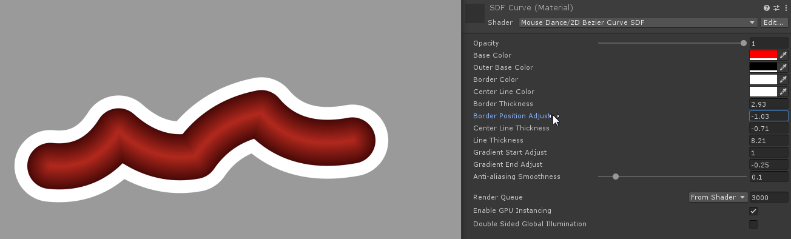
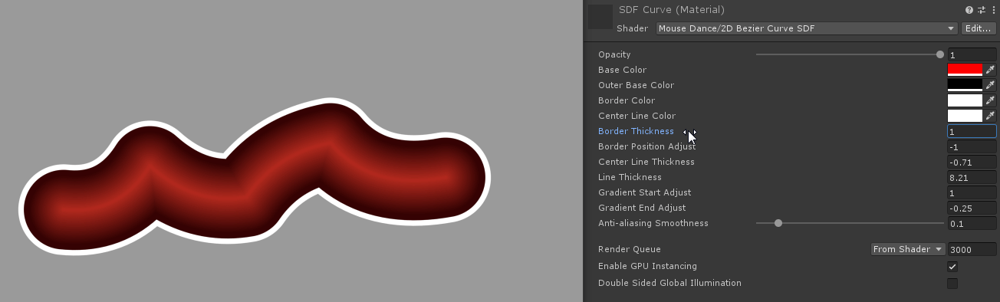
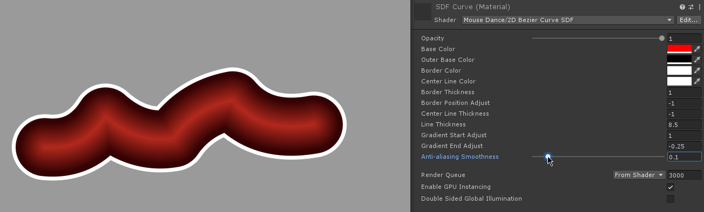

Sliders
Slider Start and End Caps are displayed using the same technique as explained for Hit Circles.
But the curve body of a Slider is rendered using a technique called Signed Distance Field. This produces accurate shapes even when the lines are thickened.
While most of its visual properties can't be manually edited (e.g. curve thickness is controlled by the .osu file's Circle Size property, colours are controlled by the Hit Object Colours, there are some visual properties you can edit.
In the MouseDance/Materials folder, you can edit the SDF Curve.mat. This is the material that the SDF Curve Prefab uses.
Border Start and End


Slider curves have a border surrounding it. You can change the thickness, move it closer to the center, or set the values to 0 if you don’t want any border.
Center Line
Slider curves can optionally have a line at its center. Set this to -1.0 if you don’t want it.
Gradient Start and End Adjust
Slider curves feature a gradient starting from the center of the line, going outward. You can adjust where the gradient starts and ends. These values are normalized. Start Adjust defaults at 1.0. End Adjust defaults at 0.0.
Anti-aliasing Smoothness

Slider curves come with their own built-in anti-aliasing. This is independent of your post-processing anti-alias. A value of 0.1 is more than enough. Too high and the curve will end up blurry, too low and it will have no effect.